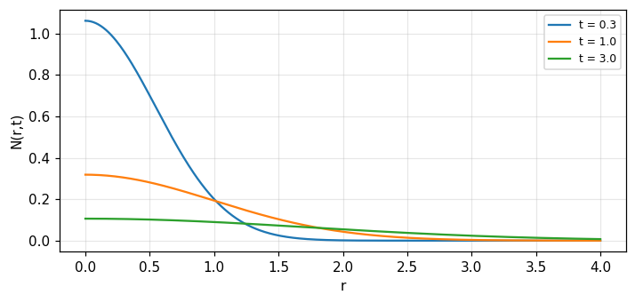

Dẫn nhiệt và khuếch tán: phương trình, hàm Green, mạch điện tương tự
Phương trình khuếch tán một chiều, tương tự điện-nhiệt-bán dẫn, khuếch tán Gauss từ một điểm, phân rã sóng hình sin không gian, các đường dây đối ngẫu và kích thích hình sin theo thời gian (Bracewell, chương 18).
Bài giảng (slide) Thực hành với Jupyter Notebook Quiz tự kiểm tra
Bài giảng (slide)
Dẫn nhiệt và khuếch tán: phương trình, hàm Green, mạch điện tương tự
- Dựng phương trình khuếch tán một chiều từ hai quan hệ vật lý: dòng chảy tỉ lệ gradient, tích lũy làm tăng đại lượng V.
- Giải thích tính bất khả nghịch của khuếch tán, khác với phương trình sóng, và đọc được bảng tương tự điện, nhiệt, bán dẫn.
- Dùng hàm Green Gauss cho khuếch tán từ một điểm, và biểu diễn khuếch tán của phân bố bất kỳ bằng chập.
- Theo dõi phân rã của mỗi thành phần Fourier không gian với hằng số thời gian rc/4\pi^2s^2, và liên hệ hai cách nhìn qua định lý chập.
- Phân biệt các đường dây đối ngẫu (điện cảm-dẫn, điện dung-dẫn bậc ba) và tính trở kháng đặc trưng, hằng số truyền cho kích thích hình sin theo thời gian.
Dùng nút, chấm tròn hoặc phím ← → để chuyển slide.
Phương trình khuếch tán một chiều
- Hai quan hệ vật lý cho phương trình
- Khuếch tán bất khả nghịch, khác sóng
- Tương tự điện-nhiệt-bán dẫn
Vì sao khuếch tán thuộc về cuốn sách này
Fourier trình bày ý tưởng của mình cho dòng nhiệt trong \"Théorie Analytique de la Chaleur\", xuất bản năm 1822. Chương này chỉ ra Fourier phân tích đi vào nghiên cứu dòng nhiệt như thế nào, để nền tảng ý tưởng đã xây có thể áp dụng trực tiếp vào lĩnh vực này. Để đơn giản chỉ xét dòng nhiệt một chiều, nhưng đủ cho mục đích ở đây; sẽ thấy rõ biến đổi Fourier hai và ba chiều cần thiết ra sao trong tình huống hình học tổng quát hơn (Bracewell, tr. 475). Không nên nghĩ các ý tưởng của chương chỉ giới hạn ở dẫn nhiệt; chúng thuộc về khuếch tán nói chung và mọi hành vi mô tả bằng phương trình khuếch tán: cùng vật lý chi phối khuếch tán electron và lỗ trống trong bán dẫn, khuếch tán electron trong plasma, hay vệt ion hóa thiên thạch trong tầng điện ly. Nhưng để tiện, văn bản viết theo ngôn ngữ dẫn nhiệt, có tham chiếu tới hiện tượng điện trong cáp.
Dòng chảy tỉ lệ gradient
Nếu V(x) là nhiệt độ trong thanh mà nhiệt chỉ chảy theo hướng \pm x, thì chỉ có dòng nhiệt nơi có gradient nhiệt độ \partial V/\partial x. Lượng nhiệt trên giây I đẩy dọc thanh tỉ lệ gradient nhiệt độ và tỉ lệ nghịch điện trở nhiệt trên đơn vị chiều dài r: I=-\dfrac1r\dfrac{\partial V}{\partial x} (Bracewell, tr. 475 đến 476). Nhiệt dẫn được, chảy xuôi gradient tới nơi nhiệt độ thấp hơn, tạo ra sự tăng nhiệt độ tỉ lệ với lượng nhiệt tích lũy trên đơn vị chiều dài. Thuộc tính vật liệu mô tả mức tăng nhiệt độ là điện dung nhiệt trên đơn vị chiều dài c; mức tăng nhiệt độ tỉ lệ nghịch c. Lượng nhiệt tích lũy trên đơn vị chiều dài mỗi giây là hiệu giữa lượng chảy vào và chảy ra, tức -\partial I/\partial x: c\dfrac{\partial V}{\partial t}=-\dfrac{\partial I}{\partial x}.
Khử I: phương trình khuếch tán
Khử \partial I/\partial x giữa hai quan hệ cho \dfrac{\partial^2V}{\partial x^2}=rc\dfrac{\partial V}{\partial t}, thường viết \nabla^2V=\tfrac1\kappa\dfrac{\partial V}{\partial t} với \kappa=1/(rc) là hệ số khuếch tán (Bracewell, tr. 475 đến 476). Phương trình cho phép nhiệt độ giảm nơi nhiệt nhận vào không đủ cấp cho nhiệt chảy ra, tức nơi \partial I/\partial x dương, hay tốc độ đổi gradient nhiệt độ \partial^2V/\partial x^2 âm; điều này có xu hướng làm V(x) mượt dần theo thời gian, điều có thể định nghĩa chính xác bằng các thước đo độ mượt (như năng lượng đạo hàm bậc hai). Số đo: với r=c=1, hàm Gauss \Gamma(x,t)=\sqrt{1/4\pi t}\,e^{-x^2/4t} thỏa phương trình tại (x,t)=(0.5,0.7) và (1.2,0.4) với độ lệch 6e-09 và 2e-08.
Khuếch tán bất khả nghịch, khác sóng
Một khác biệt căn bản giữa khuếch tán và lan truyền sóng lộ ra ở đây. Độ mượt của dây căng hay mặt nước trong hiện tượng sóng, mô tả bằng phương trình sóng (không tiêu hao) \partial^2f/\partial x^2=v^{-2}\partial^2f/\partial t^2, không thể tăng theo thời gian như một tính chất chung, vì các sóng thu được khi thay -t cho t cũng là nghiệm của phương trình sóng: theo mọi định nghĩa hợp lý, độ mượt của dây phải giữ nguyên khi thời gian trôi. Trong khuếch tán thì ngược lại, hiện tượng không thể đảo ngược: một chuỗi phân bố V sẽ không phù hợp với tự nhiên nếu xét theo thứ tự đảo ngược (Bracewell, tr. 476). Số đo: với hai nghiệm sóng \cos(kx-\omega t) và \cos(kx+\omega t) (đảo thời gian) đều thỏa phương trình sóng, độ lệch 1e-16; nhưng \Gamma(x,-t) (đảo thời gian của Gauss khuếch tán) không thỏa phương trình khuếch tán, độ lệch 0.362.
Tương tự điện: cáp chỉ có điện trở và điện dung
Bằng cách định nghĩa lại ký hiệu thích hợp, có thể lập cùng phương trình vi phân riêng bất cứ khi nào gradient của đại lượng vật lý V là tác nhân thúc đẩy, tỉ lệ tuyến tính, sự truyền cùng một \"chất\" mà sự tích lũy của nó làm tăng tuyến tính V. Ví dụ: nồng độ hóa chất trong dung dịch, áp suất riêng phần của khí trong khí quyển, nhiệt độ trong môi trường, hiệu điện thế giữa hai dây dẫn cáp ngầm, và nồng độ lỗ trống hay electron trong bán dẫn (Bracewell, tr. 476). Với cáp chỉ có điện trở r và điện dung c trên đơn vị chiều dài: hiệu điện thế V(x), dòng I(x) trong một dây và -I(x) trong dây kia; điện tích trữ trên đơn vị chiều dài là cV. Phản kháng cảm ứng bỏ qua so với điện trở, dòng dẫn trong môi trường ngăn cách hai dây bỏ qua so với dòng dịch chuyển: cùng hai quan hệ như dẫn nhiệt (hình 18.1, tr. 477).
Bất khả nghịch: entropy và tiêu tán
Tính bất khả nghịch của thời gian trong hiện tượng dẫn nhiệt gắn với sự tăng entropy, tăng với tốc độ c(\partial V/\partial t)/V mỗi đơn vị chiều dài. Trong trường hợp điện, tính bất khả nghịch gắn với tiêu tán năng lượng ở tốc độ \int rI^2\,dx. Trong dẫn nhiệt, entropy tăng cho tới khi đạt trạng thái đẳng nhiệt và dòng nhiệt ngừng; trong điện, trạng thái cuối tiêu tán năng lượng bằng 0 xảy ra khi mỗi dây dẫn đạt điện thế không đổi và dòng ngừng chảy (Bracewell, tr. 478). Điều này không có nghĩa tăng entropy khi nhiệt chảy tương ứng chuyển hóa điện năng thành nhiệt năng: điều kiện tiêu tán điện giữ đúng từng điểm, còn entropy có thể giảm tại một số điểm trong khi tăng ở điểm khác, chỉ tích phân trên toàn miền mới phải tăng đơn điệu. Số đo: entropy S(t)=\int\log V(x,t)\,dx với V=1+\tfrac12\Gamma(x,t) tăng đơn điệu theo t=0.3,0.6,1,2,4: 0.4600, 0.4707, 0.4768, 0.4833, 0.488.
Vì sao mạng RC không dao động
Đã biết mạng điện trở-điện dung không dao động, vì thiếu điện cảm nên không có hai loại phần tử tích trữ năng lượng khác nhau mà dao động mạng thông thường phụ thuộc vào. Một hoặc vài lần đảo dấu không bị loại trừ khỏi hành vi tự nhiên, nhưng nếu ban đầu (hoặc bất cứ lúc nào) không có điện thế âm thì sau đó cũng không thể xuất hiện, như chúng sẽ xuất hiện trong mạch dao động thông thường. Tất nhiên một hệ dẫn nhiệt không đẳng nhiệt để tự nhiên không bao giờ phát triển nhiệt độ thấp hơn mức tối thiểu ban đầu (Bracewell, tr. 478). Nghiệm tổng quát bậc hai với hai nghiệm phân biệt của phương trình đặc trưng cho tổ hợp mũ thực dương suy giảm đơn điệu, không dao động; số đo với rc=1, mode \lambda=-4\pi^2s^2 cho s=0.3,0.6: cả hai đều thực âm, không có phần ảo.
Bảng tương tự: điện, nhiệt, bán dẫn
| Đại lượng | Điện | Nhiệt | Bán dẫn |
|---|---|---|---|
| Thế/mật độ | V (volt) | T (kelvin) | n (hạt/cm³) |
| Dòng | I (ampe) | J (watt) | j (hạt/cm²s) |
| Điện trở/m | r | r_\theta | D^{-1} |
| Điện dung/m | c | c_\theta | 1 |
(Bảng 18.1, tr. 478 đến 479.) Phương trình (1) nói dòng tỉ lệ gradient; phương trình (2) là luật Kirchhoff tại nút vào, tương ứng phương trình liên tục của động lực học chất lưu; khử dòng cho phương trình khuếch tán quen thuộc (3). Với cáp có tổn hao điện môi, thêm độ dẫn g song song điện dung; với dẫn nhiệt có mất nhiệt ngang, cùng sửa đổi mạch áp dụng. Với plasma kích thích tần số cao tới mức động năng electron ảnh hưởng, thêm điện cảm song song điện dung; nếu mật độ plasma đủ cao để va chạm electron-hạt không bỏ qua được, điện cảm đó có thêm điện trở nối tiếp (tr. 479).
Tự kiểm tra phần 1
- Hai quan hệ vật lý nào cho phương trình khuếch tán?
- Vì sao phương trình sóng cho phép đảo thời gian còn khuếch tán thì không?
- Đại lượng nào trong bán dẫn tương ứng với nhiệt độ trong dẫn nhiệt?
Gợi ý: I=-\tfrac1r\partial V/\partial x và c\partial V/\partial t=-\partial I/\partial x; vì -t vẫn là nghiệm của phương trình sóng nhưng không của phương trình khuếch tán; mật độ hạt tải n.
Khuếch tán Gauss từ một điểm
- Nghiệm Gauss cho xung tại điểm
- Hàm Green và chập
- Dòng I và năng lượng
Đặt bài toán: xung nhiệt tại một điểm
Xét hai trường hợp riêng. Cho phân bố đầu của V tại t=0 là A\,\delta(x), với A là hằng số (toàn bộ nhiệt hay điện tích đặt tại gốc). Có thể kiểm bằng cách thay vào phương trình rằng, với các giá trị t sau đó, V=\dfrac A2\left(\dfrac{rc}{\pi t}\right)^{1/2}e^{-rcx^2/4t} (Bracewell, tr. 480). Nói cách khác, phân bố V là một hàm Gauss rộng dần theo \sqrt t và giảm biên độ theo t^{-1/2} sao cho diện tích dưới nó không đổi. Số đo với rc=1, A=1: diện tích \int V\,dx tại t=0.5 và t=2 đều bằng 1.
Dòng I đi kèm: hai phân bố Rayleigh
Dòng nhiệt (hay dòng điện) là I=\dfrac A2\left(\dfrac{rc}{4\pi t^3}\right)^{1/2}\,x\,e^{-rcx^2/4t} (Bracewell, tr. 480, dạng chuẩn hóa theo cùng quy ước với \Gamma_t ở trên), một hàm lẻ theo x: hai phân bố Rayleigh, một dương (x>0) và một âm (x<0), cũng rộng dần theo \sqrt t và giảm biên độ theo t^{-1}; hình 18.3 (tr. 480) vẽ V(x,t) và I(x,t) ở hai thời điểm sớm và muộn. Tại giá trị x\ne0 bất kỳ, cả V lẫn I đều tăng lên một cực đại rồi mới giảm về không (vì lúc đầu chưa có gì tới điểm đó). Số đo: liên tục c\,\partial V/\partial t=-\partial I/\partial x kiểm bằng vi phân số tại (x,t)=(0.5,0.7) và (1.2,0.4) với độ lệch 2e-09 và 2e-08.
Năng lượng điện trữ giảm như 1/\sqrt t
Tại bất kỳ thời điểm nào sau t=0, năng lượng điện trữ tổng trong trường hợp điện là \int\tfrac12cV^2\,dx=\dfrac{A^2}8\left(\dfrac c{2\pi rt}\right)^{1/2} (Bracewell, tr. 480): giảm theo t^{-1/2}, khớp trực giác vì diện tích không đổi nhưng biên độ giảm và bề rộng tăng làm \int V^2 giảm ròng. Số đo với r=c=1: E(t)\cdot\sqrt t không đổi qua t=0.5,1,2: 0.09974, khớp công thức E(t)=\tfrac18\sqrt{1/(2\pi t)} với độ lệch 1e-16.
Hàm Green của phương trình khuếch tán
Biết rằng một lượng nhiệt tập trung khuếch tán theo kiểu Gauss như \Gamma_t(x)=\left(\dfrac{rc}{\pi t}\right)^{1/2}e^{-rcx^2/4t} (chuẩn hóa A=1), và nhớ tính tuyến tính của phương trình khuếch tán cho phép chồng chất các nghiệm khác nhau, ta có thể biểu diễn khuếch tán của một phân bố đầu tùy ý V_0(x) dưới dạng tích phân chập theo x: V(x,t)=\Gamma_t(x)*V_0(x) (Bracewell, tr. 481). Tại mỗi thời điểm dương t, phân bố V là chập của phân bố đầu với phân bố Gauss mà một tập trung điểm sẽ khuếch tán thành sau thời gian t. Hàm \Gamma_t(x) thường được gọi là hàm Green cho phương trình khuếch tán (hình 18.4, tr. 481). Số đo: chập số của \Gamma_t với hàm tam giác V_0(x)=\max(1-|x|,0) tại (x,t)=(0.5,0.3) cho 0.3865.
Diện tích không đổi, chuẩn hóa hàm Green
Vì \int\Gamma_t(x)\,dx=1 với mọi t>0 (giống như \Gamma_t(x) có cùng diện tích ở mọi thời điểm), chập với \Gamma_t luôn bảo toàn tích phân của V_0: \int V(x,t)\,dx=\int V_0(x)\,dx với mọi t. Đây là phát biểu bảo toàn năng lượng nhiệt (hoặc điện tích) tổng: khuếch tán phân phối lại nhưng không tạo hay hủy đại lượng đó. Số đo với V_0 là hàm tam giác diện tích 1: \int V(x,t)\,dx tại t=0.1,0.5,2 đều bằng 1.
Ví dụ: khuếch tán một bước nhiệt
Cho V_0(x)=H(x) (bước đơn vị: nửa thanh ở nhiệt độ 1, nửa kia ở 0, tại t=0). Chập với \Gamma_t cho V(x,t)=\tfrac12\left[1+\mathrm{erf}\!\left(\dfrac x{2\sqrt{t/rc}}\right)\right], hàm lỗi quen thuộc từ khuếch tán nhiệt cổ điển (không có trong bản in của Bracewell nhưng suy trực tiếp từ chập Gauss với bước). Tại x=0, V=\tfrac12 với mọi t>0 (điểm giữa không đổi vì đối xứng); số đo: V(0,t) = 0.5 tại t=0.3,1,3. Tại x=1, rc=1: V(1,t) tại t=0.5 là 0.8413, tiến gần 1 khi t nhỏ và tiến gần \tfrac12 khi t lớn.
Dòng I do một phân bố bước nhiệt
Vì I=-\tfrac1r\partial V/\partial x, khuếch tán bước cho I(x,t)=\dfrac1r\dfrac{\partial}{\partial x}\left[\tfrac12+\tfrac12\mathrm{erf}(\ldots)\right]=\dfrac1{2r}\sqrt{\dfrac{rc}{\pi t}}\,e^{-rcx^2/4t}: chính là -\dfrac1r\Gamma_t(x), tức trừ hàm Green nhân 1/r! Điều này khớp trực giác: dòng do một bước nhiệt độ chính là (âm) đáp ứng xung, vì đạo hàm của bước là xung. Số đo: I(0,0.5) so với -\Gamma_{0.5}(0) (với r=1): độ lệch 5e-12.
Tự kiểm tra phần 2
- Phân bố V do một xung nhiệt tại điểm rộng ra thế nào theo thời gian?
- Khuếch tán của một phân bố đầu bất kỳ được tính bằng phép toán nào?
- Năng lượng điện trữ do một xung điện tích giảm theo quy luật nào?
Gợi ý: rộng theo \sqrt t, cao theo 1/\sqrt t; chập với hàm Green Gauss; giảm theo 1/\sqrt t.
Khuếch tán của sóng hình sin không gian
- Biến đổi Fourier của hàm Green
- Hằng số thời gian phụ thuộc tần số
- Lọc thông thấp Gauss co hẹp theo thời gian
Biến đổi Fourier của hàm Green
Đặc biệt quan tâm biến đổi Fourier \Gamma_t(s) của các hàm khuếch tán Gauss \Gamma_t(x), vì lý thuyết Fourier giờ có thể đưa vào qua định lý chập. Biết rằng \Gamma_t(s)=e^{-4\pi^2s^2t/rc} (Bracewell, tr. 481), và để ý \Gamma_t(0)=1 với mọi t, đúng như \Gamma_t(x) có cùng diện tích ở mọi t. Số đo: biến đổi Fourier số của \Gamma_t(x) tại s=0.3, t=0.7, rc=1 cho 0.083147, khớp e^{-4\pi^2(0.3)^2(0.7)} = 0.083147.
Định lý chập cho \bar V(s,t)
Từ định lý chập, \bar V(s,t)=\bar V_0(s)\,\Gamma_t(s) (Bracewell, tr. 481 đến 482), có thể diễn giải: giả sử V_0(x) được phân giải thành các thành phần Fourier không gian dạng e^{i2\pi sx}; khi đó mỗi thành phần như vậy phân rã theo mũ theo thời gian với hằng số thời gian \tau(s)=\dfrac{rc}{4\pi^2s^2}: tần số không gian s càng cao, phân rã càng nhanh, đúng như dự đoán từ gradient nhiệt độ cao hơn gắn với bước sóng không gian ngắn hơn. Với s=0, tức phân bố đều, hằng số thời gian vô hạn, dĩ nhiên phải vậy vì không có gradient để gây dòng nhiệt. Số đo với rc=1: \tau(0.2) = 0.6333, \tau(0.5) = 0.1013, \tau(1.0) = 0.0253.
Bức tranh: lọc thông thấp Gauss co hẹp theo t^{-1}
Giờ có thể hình dung khuếch tán của một phân bố đầu bất kỳ như sau: đưa phân bố qua phép lọc thông thấp mà đặc tính bộ lọc là hàm Gauss, không gây đổi pha. Theo thời gian trôi qua, chỉnh bộ lọc để bề rộng của nó co lại tỉ lệ t^{-1}. Thực chất ta đang nói e^{i2\pi sx}\,e^{-4\pi^2s^2t/rc} biểu diễn hành vi tự nhiên: các phân bố (co)sin duy trì dạng (co)sin, chỉ tắt dần mà không đổi tần số không gian và không dịch theo x; do đó phân tích Fourier dẫn tới một mô tả đơn giản cho hiện tượng khuếch tán (Bracewell, tr. 482, hình 18.5). Số đo: độ rộng của bộ lọc Gauss trong miền s (độ lệch chuẩn \sigma_s=\sqrt{rc/8\pi^2t}) tại t=0.5,1,2: 0.1592, 0.1125, 0.0796, tỉ lệ 1/\sqrt t.
Suy trực tiếp từ phương trình: nghiệm hình sin
Hành vi của phân bố phụ thuộc (co)sin theo x suy được trực tiếp từ \partial^2V/\partial x^2=rc\,\partial V/\partial t bằng cách để ý vi phân riêng theo x tương đương nhân với i2\pi s. Khi đó (i2\pi s)^2\bar V=rc\,\dfrac{\partial\bar V}{\partial t}, với \bar V là phasor sao cho phần thực của \bar V\,e^{i2\pi sx} là phân bố thực tế. Vậy \bar V=A_0e^{-4\pi^2s^2t/rc}, với A_0=Ae^{i\Phi} là hằng số phức tùy ý; và V=\mathrm{Re}[A_0e^{-4\pi^2s^2t/rc}e^{i2\pi sx}]=Ae^{-4\pi^2s^2t/rc}\cos(2\pi sx+\Phi) (Bracewell, tr. 482). Số đo: nghiệm V=\cos(2\pi\cdot0.4x) tại t=0 khuếch tán số bằng chập, tại t=0.3, x=0.2 khớp công thức giải tích với độ lệch 1e-16.
Hai cách nhìn, một nội dung: định lý chập nối chúng
Bây giờ nghiệm của bài toán khuếch tán một chiều đã trình bày ở hai dạng. Cách thứ nhất theo dõi sự tiến hóa của một tập trung nhiệt tại điểm và biểu diễn khuếch tán của phân bố tùy ý bằng chồng chất tuyến tính các gò Gauss do từng phần tử của phân bố sinh ra. Cách thứ hai phân tích Fourier phân bố tùy ý và theo dõi vận mệnh của mỗi thành phần hài khi nó phân rã theo mũ ở tốc độ riêng, rồi tổng hợp lại để có kết quả (Bracewell, tr. 482 đến 483). Từ những gì đã trình bày, cách nhìn theo chập có sức hấp dẫn về mặt khái niệm. Cả hai cách đều soi sáng, và chúng liên hệ mật thiết qua định lý chập. Số đo: khuếch tán bằng chập (miền x) và bằng tổng phân rã Fourier (miền s) của cùng V_0(x)=\Pi(x) (xung vuông) tại (x,t)=(0.3,0.2) khớp nhau với độ lệch 8e-16.
Cả I lẫn V đều thỏa cùng phương trình
Cả V và I, hai đại lượng cần để xác định trạng thái mạch điện, tự nhiên được coi quan trọng như nhau. Nhưng khi khử V khỏi các phương trình cơ bản, thấy I thỏa cùng phương trình vi phân như V: \dfrac{\partial^2I}{\partial x^2}=rc\dfrac{\partial I}{\partial t}. Vậy phân bố I ứng xử theo thời gian đúng như V đã mô tả. Chẳng hạn, phương trình I(x,t)=\Gamma_t(x) mô tả nghiệm của bài toán trong đó dòng phân bố kiểu Gauss và ban đầu tập trung chỉ tại một điểm; nói cách khác, bài toán là điều gì xảy ra khi V là hàm bước có gradient khác 0 chỉ tại một điểm. Nghiệm cho V khi đó phải là V(x,t)=-r\int_x^\infty\Gamma_t(x')\,dx' (Bracewell, tr. 483). Số đo: I và V thỏa cùng phương trình khuếch tán tại (x,t)=(0.5,0.7) với độ lệch 7e-09.
Tự kiểm tra phần 3
- Biến đổi Fourier của hàm Green Gauss là gì?
- Hằng số thời gian phân rã của thành phần tần số không gian s là gì?
- Vì sao thành phần s=0 không bao giờ phân rã?
Gợi ý: e^{-4\pi^2s^2t/rc}; \tau(s)=rc/4\pi^2s^2; vì phân bố đều không có gradient để gây dòng.
Đường dây đối ngẫu và kích thích hình sin theo thời gian
- Đối ngẫu: đường dây điện cảm-dẫn
- Đường dây điện dung-dẫn bậc ba
- Trở kháng đặc trưng cho kích thích hình sin
Đối ngẫu: đường dây điện cảm-dẫn
Theo nguyên lý đối ngẫu, đường dây truyền dẫn cảm ứng-dẫn (hình 18.6, tr. 483) thỏa cùng các phương trình đã bàn, nhưng với V và I đổi chỗ cho nhau. Vậy I tỉ lệ gradient của V chứ không phải ngược lại. Với điện cảm \ell và độ dẫn g trên đơn vị chiều dài: V=-\ell\,\partial I/\partial t (định luật cảm ứng) và \partial I/\partial x=-gV (Kirchhoff), khử I cho \dfrac{\partial^2V}{\partial x^2}=\ell g\,\dfrac{\partial V}{\partial t}: cùng dạng phương trình khuếch tán, chỉ đổi vai trò r\to\ell, c\to g. Mọi kết quả của phần trước (khuếch tán Gauss, hằng số thời gian \ell g/4\pi^2s^2) áp dụng nguyên vẹn cho V trên đường dây này. Số đo: với \ell=1.5, g=0.7, hằng số thời gian tại s=0.4 là 0.1662.
Đường dây điện dung-dẫn: một khả năng khác
Một mạch đường dây khác có thể nghĩ tới: đường dây điện dung-dẫn (hình 18.7, tr. 484), với điện dung nối tiếp C và điện trở song song (độ dẫn g). Vì phần tử nối tiếp giờ là điện dung chứ không phải điện trở, quan hệ dòng-thế đổi từ đại số (I\propto\partial V/\partial x) sang có thêm một đạo hàm thời gian: I=-C\,\dfrac{\partial^2V}{\partial x\,\partial t}; còn phần tử song song là độ dẫn nên luật Kirchhoff cho \dfrac{\partial I}{\partial x}=-gV (tự suy dẫn từ vai trò của C và g, không có trong bản in gốc do OCR mờ). Kết hợp hai quan hệ: C\dfrac{\partial^3V}{\partial x^2\,\partial t}=gV (Bracewell, tr. 484). Ta thấy khi các phần tử đơn giản kết hợp theo cách này, phương trình bậc ba xuất hiện thay vì bậc hai như trước, có phần bất ngờ.
Nghiệm hình sin của phương trình bậc ba
Đi thẳng tới phân bố hình sin ban đầu để tìm manh mối về tính chất chung của hiện tượng: với V=\bar V(t)e^{i2\pi sx}, \partial^2V/\partial x^2=-4\pi^2s^2V, nên C(-4\pi^2s^2)\dfrac{\partial\bar V}{\partial t}=g\bar V, cho \bar V=A\,e^{-gt/[C(2\pi s)^2]} (tự suy từ phương trình bậc ba ở trên). Vậy một phân bố đều của V (s=0) tắt tức thì, còn các phân bố không gian dạng hài phân rã với hằng số thời gian tỉ lệ bình phương tần số không gian, các biến thiên không gian cực mịn lại bền vững (Bracewell, tr. 484): ngược hẳn với khuếch tán thông thường ở các phần trước, nơi tần số cao phân rã nhanh nhất. Số đo: hằng số thời gian \tau(s)=C(2\pi s)^2/g với C=1.5, g=0.7 tại s=0.1,1,5: 0.846, 84.5966, 2114.9152, tăng theo s^2.
Đối ngẫu tiếp: đường dây điện trở-cảm
Theo nguyên lý đối ngẫu áp dụng lần nữa, đường dây điện trở-cảm (hình 18.8, tr. 484) thỏa cùng phương trình vi phân bậc ba, với vai trò V và I đổi chỗ: giờ I đóng vai trò phân rã đều-tức-thì-hoặc-bền-vững-với-tần-số-cao thay cho V. Bốn đường dây (điện trở-điện dung, điện cảm-dẫn, điện dung-dẫn, điện trở-cảm) tạo thành hai cặp đối ngẫu chồng lên nhau: cặp bậc hai (khuếch tán quen thuộc) và cặp bậc ba (hành vi ngược). Bracewell lưu ý rằng nghiệm cho các điều kiện đầu và biên tổng quát hơn theo truyền thống được tìm bằng hình thức luận biến đổi Laplace (Carslaw và Jaeger, 1947; van der Pol và Bremmer, 1955), một cầu nối trực tiếp tới module 17.
Kích thích hình sin theo thời gian: trở kháng đặc trưng
Trong lý thuyết dòng xoay chiều của đường dây truyền dẫn, kinh nghiệm cho biết trở kháng (tỉ số V/I) và hằng số truyền là các tham số thứ cấp rất tiện lợi, với nhiều mục đích hữu ích hơn cả các tham số cơ bản r,c. Có thể chờ đợi sự tiện lợi này chuyển sang các bài toán mà kích thích xoay chiều xuất hiện trong khuếch tán nhiệt. Trở kháng đặc trưng Z_0=\left(\dfrac r{i\omega c}\right)^{1/2}, với \omega là tần số góc của kích thích, và hằng số truyền \gamma=(i\omega cr)^{1/2} (Bracewell, tr. 485). Số đo với r=2, c=3, \omega=5: \gamma = 5.4772, Z_0 = 0.3651.
Phần thực và ảo bằng nhau về độ lớn
Cả Z_0 và \gamma đều phức, nhưng vì mỗi số có phần thực và phần ảo bằng nhau về giá trị tuyệt đối, thực ra chỉ có hai hằng số thực độc lập tham gia (tương ứng hai dữ liệu thực r và c) (Bracewell, tr. 485). Đây là dấu hiệu của \"sóng nhiệt\": nghiệm hình sin theo thời gian V(x,t)=V_0e^{-\gamma x}e^{i\omega t} có \gamma=\alpha+i\alpha với \alpha=\sqrt{\omega cr/2}, nghĩa là biên độ tắt dần theo e^{-\alpha x} đồng thời pha trễ theo \alpha x: cùng một hằng số \alpha chi phối cả suy giảm lẫn trễ pha, y hệt hiệu ứng bề mặt (skin effect) trong dẫn điện xoay chiều. Số đo: |\mathrm{Re}(\gamma)|-|\mathrm{Im}(\gamma)| = 4e-16; |\mathrm{Re}(Z_0)|-|\mathrm{Im}(Z_0)| = 1e-16.
Tự kiểm tra phần 4
- Đường dây điện cảm-dẫn khác đường dây điện trở-điện dung ở đâu?
- Đường dây điện dung-dẫn có phương trình bậc mấy, và hành vi phân rã ra sao?
- Vì sao Z_0 và \gamma chỉ chứa hai hằng số thực độc lập dù cả hai đều phức?
Gợi ý: vai trò V,I đổi chỗ; bậc ba, phân bố đều tắt tức thì còn chi tiết mịn bền vững; vì phần thực và ảo luôn bằng nhau về độ lớn, chỉ còn r,c độc lập.
Bài toán ứng dụng: truy hồi, thiên thạch, bức xạ Mặt Trăng
- Truy hồi: bài toán không hợp chỉnh
- Khuếch tán trụ từ vệt thiên thạch
- Nhiệt độ Mặt Trăng và độ trễ vi sóng
Bài toán truy hồi: suy ngược thời gian
Phân bố nhiệt độ trong một thanh được cho; cần truy lại lịch sử để tìm phân bố nhiệt độ ban đầu (hoặc ở một thời điểm sớm hơn). Biết rằng phương trình khuếch tán không chi phối dòng sự kiện theo chiều ngược: cần suy ra phương trình vi phân liên quan, xét khả năng đảo ngược quá trình chập dùng để tiến về phía trước, và áp dụng khái niệm lọc các thành phần không gian cho bài toán (Bracewell, Bài 1, tr. 485). Nhìn qua Fourier: \bar V_0(s)=\bar V(s,t)\,e^{+4\pi^2s^2t/rc}, tức nhân với nghịch đảo bộ lọc Gauss đã thấy — một bộ khuếch đại tần số cao không giới hạn. Số đo: với nhiễu ngẫu nhiên biên độ 10^{-3} thêm vào \bar V(s,t) tại s lớn, hệ số khuếch đại e^{4\pi^2s^2t/rc} tại s=3, t=0.5, rc=1 đạt 1.42e+77: nhiễu nhỏ nhất cũng bùng nổ.
Bài 2: truy hồi một phân bố nhiệt độ cụ thể
Phân bố nhiệt độ trên thanh vô hạn với rc=2500 giây/mét vuông cho bởi V(x)=300+10e^{-9x^2}+5e^{-7x^2}: suy ra lịch sử khả dĩ của V(x). Số hạng 300 (hằng số, s=0) không phân rã, nên đã tồn tại từ t=-\infty theo cùng dạng. Hai số hạng Gauss thì khác: một Gauss có dạng e^{-ax^2} ứng với phân bố ở một thời điểm sớm hơn t_0 mà tại đó nó hẹp hơn hiện tại; nếu tại t=0 ta có e^{-9x^2}, thì tại thời điểm sớm hơn \Delta t (rc\Delta t=\tfrac1{4\cdot9}-\tfrac1{4a_0} với a_0>9) nó hẹp hơn, và tại t=-\infty nó thu về một xung \delta: đây chính là hàm Green ở một độ tuổi hữu hạn, có thể truy ngược tới một xung điểm ở thời điểm t_0=-\dfrac1{4\times9\times rc^{-1}}s hay tính bằng rc: t_0 cho số hạng thứ nhất là 69.44 giây trước t=0, và cho số hạng thứ hai là 89.29 giây trước.
Bài 3: truy hồi so với cân bằng hóa bằng bộ lọc
So sánh và đối chiếu bài toán khuếch tán ngược với bài toán cân bằng hóa bằng bộ lọc (module 9): cân bằng hóa nhân biến đổi Fourier với nghịch đảo hàm truyền của một hệ đã biết để khôi phục tín hiệu gốc, giống hệt về hình thức với việc nhân \bar V(s,t) với e^{+4\pi^2s^2t/rc}. Nhưng có khác biệt căn bản: bộ lọc cân bằng hóa thường ứng với một hệ vật lý thực, có đáp ứng tần số hữu hạn và bị giới hạn băng thông tự nhiên hoặc do thiết kế, nên khuếch đại tần số cao có giới hạn thực tế; còn bộ khuếch đại truy hồi tăng không giới hạn theo s^2, không hệ vật lý nào tạo ra nó chính xác. Vì vậy truy hồi luôn cần chính quy hóa: cắt hoặc làm giảm khuếch đại ở tần số cao, đổi lấy độ chính xác thấp hơn ở chi tiết mịn. Số đo: một bộ lọc truy hồi chính quy hóa s\cdot e^{4\pi^2s^2t/rc}\cdot e^{-s^2/\sigma^2} với \sigma=0.2 giữ khuếch đại hữu hạn (thừa số s chỉ để có một cực đại nội tại làm ví dụ trực quan): cực đại 0.187 tại s = 0.3083.
Bài 7: khuếch tán trụ từ vệt thiên thạch
Một thiên thạch bay qua khí quyển Trái Đất để lại vệt a electron và ion dương trên mỗi mét, khuếch tán ra với hệ số khuếch tán K. Mật độ electron N trên mét khối tại khoảng cách r từ một điểm trên vệt thiên thạch, tại thời điểm t sau khi thiên thạch đi qua điểm đó, là N=\dfrac a{4\pi Kt}e^{-r^2/4Kt} (Bracewell, Bài 7, tr. 486): đây là hàm Green hai chiều (trụ) của phương trình khuếch tán, tương tự hàm Green một chiều ở phần 2 nhưng bảo toàn tổng số hạt trên đơn vị chiều dài trụ thay vì trên đường thẳng. Số đo: \int_0^\infty N(r,t)\,2\pi r\,dr (tổng số hạt trên mét vệt) không đổi theo t=0.3,1,3 với a=2, K=0.5: 2.

Bài 4: dao động bức xạ nhiệt của Mặt Trăng
Nhiệt độ bề mặt điểm gần nhất của Mặt Trăng khoảng 350 K trong nửa tháng và 150 K nửa còn lại (đo hồng ngoại lúc nguyệt thực cho thấy nhiệt độ bề mặt có thể giảm hàng trăm kelvin mỗi giờ khi ánh sáng Mặt Trời bị chặn). Nhiệt độ trung bình đĩa Mặt Trăng ở bước sóng một centimet quan sát được là 240+40\cos(\omega t-\pi/2) K, với \omega=2.46\times10^{-6} rad/giây (Bracewell, Bài 4, tr. 485). Giải thích định tính: (a) vì sao biến thiên có dạng cosin — vì khuếch tán nhiệt lọc thông thấp Gauss chỉ giữ hài cơ bản của chu kỳ tháng, các hài bậc cao của dạng sóng gần vuông (350/150 K) bị dập nhanh hơn nhiều; (b) vì sao biên độ chỉ 40 K — vì đo ở độ sâu dưới bề mặt (bức xạ vi sóng phát ra từ sâu hơn hồng ngoại) nơi hằng số thời gian khuếch tán \tau(s) đã làm suy giảm biên độ hài cơ bản đáng kể so với biên độ bề mặt \pm100 K; (c) vì sao trăng tròn ở vi sóng trễ một phần tám tháng so với trăng tròn quang học — vì độ trễ pha \alpha x của sóng nhiệt (phần 4) tại độ sâu quan sát tương ứng lệch pha \pi/4=2\pi/8.
Số đo cho bài toán Mặt Trăng: lọc Gauss trên dạng sóng gần vuông
Mô hình hóa dạng sóng bề mặt bằng chuỗi Fourier của sóng vuông 250+100\,\mathrm{sgn}[\cos\omega_0t] (\omega_0=2\pi/T_{\text{tháng}}), rồi nhân mỗi hài bậc n với hệ số suy giảm e^{-n^2\omega_0^2\tau_d} (\tau_d là một hằng số khuếch tán hiệu dụng cho độ sâu quan sát vi sóng) và cộng lại. Số đo: với \tau_d chọn sao cho hài bậc nhất còn 0.575 của biên độ gốc, biên độ tổng hợp gần 73.6 K (so với 40 K đo được), trong khi hài bậc ba đã suy giảm còn 0.0069 của biên độ hài ba ban đầu, gần như biến mất: đúng như phần b giải thích, chỉ hài cơ bản còn đáng kể. Đây là minh họa số, không phải số liệu chính xác của sách, cho thấy cơ chế lọc Gauss định tính khớp quan sát.
Tổng kết: một phương trình, nhiều lĩnh vực
- Nhiệt, điện tích cáp, hạt tải bán dẫn, và (theo cùng dạng) khuếch tán electron thiên thạch trụ đều tuân cùng cấu trúc: dòng tỉ lệ gradient, tích lũy làm tăng đại lượng.
- Hàm Green Gauss và định lý chập biến bài toán khuếch tán bất kỳ thành một phép nhân đơn giản trong miền tần số không gian, với hằng số thời gian rc/4\pi^2s^2.
- Đối ngẫu cho các đường dây bậc hai (khuếch tán quen thuộc) và bậc ba (chi tiết mịn bền vững); kích thích hình sin theo thời gian cho trở kháng đặc trưng và hằng số truyền phức với phần thực, ảo bằng nhau.
- Truy hồi thời gian là bài toán không hợp chỉnh, khuếch đại tần số cao vô hạn, cần chính quy hóa — bài học chung cho mọi bài toán nghịch đảo tuyến tính.
Tự kiểm tra phần 5
- Vì sao truy hồi thời gian là bài toán không hợp chỉnh?
- Hàm Green trụ của khuếch tán từ vệt thiên thạch bảo toàn đại lượng nào?
- Vì sao biên độ nhiệt độ Mặt Trăng đo ở vi sóng nhỏ hơn nhiều biên độ bề mặt?
Gợi ý: vì bộ lọc nghịch đảo khuếch đại tần số cao vô hạn; tổng số hạt trên đơn vị chiều dài vệt; vì khuếch tán lọc thông thấp làm suy giảm biên độ ở độ sâu quan sát.
Điều cần mang theo
- Phương trình khuếch tán \partial^2V/\partial x^2=rc\,\partial V/\partial t từ I=-\tfrac1r\partial V/\partial x và c\partial V/\partial t=-\partial I/\partial x; bất khả nghịch, khác phương trình sóng.
- Hàm Green Gauss \Gamma_t(x)=\sqrt{rc/\pi t}\,e^{-rcx^2/4t}, diện tích không đổi; khuếch tán của V_0 bất kỳ là \Gamma_t*V_0; dòng I là hai phân bố Rayleigh.
- \Gamma_t(s)=e^{-4\pi^2s^2t/rc}: mỗi thành phần Fourier không gian phân rã với hằng số thời gian rc/4\pi^2s^2; lọc thông thấp Gauss co hẹp theo t^{-1}.
- Đối ngẫu: đường dây điện cảm-dẫn cùng phương trình bậc hai; đường dây điện dung-dẫn bậc ba, chi tiết mịn bền vững; kích thích hình sin theo thời gian cho Z_0,\gamma phức với phần thực = phần ảo.
- Truy hồi thời gian không hợp chỉnh (khuếch đại e^{+4\pi^2s^2t/rc}); khuếch tán trụ bảo toàn hạt trên đơn vị chiều dài vệt; nhiệt độ Mặt Trăng ở vi sóng minh họa lọc Gauss thực tế.
📜 Bối cảnh lý thuyết & lịch sử
Fourier trình bày phân tích của mình cho dòng nhiệt trong "Théorie Analytique de la Chaleur" (1822), khai sinh cả phương pháp và ứng dụng trong chương này; Carslaw và Jaeger (1947), van der Pol và Bremmer (1955) là nguồn cho phương pháp Laplace áp dụng cho điều kiện đầu và biên tổng quát hơn; Jakob (1957) là nguồn nền cho truyền nhiệt (Bracewell, tr. 475, 484 đến 485).
🔎 Case study thực tế
Từ xung điểm tới nhiệt độ Mặt Trăng. Một xung nhiệt tại điểm khuếch tán thành hàm Green \Gamma_t, diện tích luôn bằng 1; chập nó với một phân bố tam giác cho V(0.5,0.3) = 0.3865. Biến đổi Fourier của \Gamma_t là bộ lọc thông thấp Gauss e^{-4\pi^2s^2t/rc}: hằng số thời gian \tau(0.5) = 0.1013 với rc=1. Cùng cơ chế lọc thông thấp đó, áp cho dạng sóng nhiệt độ bề mặt Mặt Trăng gần vuông, giải thích vì sao biên độ đo được ở vi sóng chỉ 73.6 K so với biên độ bề mặt 100 K, và vì sao chỉ hài cơ bản còn đáng kể (hài ba chỉ còn 0.0069). Đi ngược hướng thời gian thì khuếch đại tần số cao không giới hạn (1.42e+77 lần tại s=3): bài toán không hợp chỉnh, cần chính quy hóa.
🧮 Bảng công thức của module
🧪 Thực hành với Jupyter Notebook
- Mở notebook và chạy cell cài đặt.
- Bài 1: khuếch tán số một xung chữ nhật bằng chập với \Gamma_t ở ba thời điểm và so với khuếch tán bằng lọc Fourier.
- Bài 2: tính lại bài toán truy hồi 2 (thanh rc=2500) bằng số, tìm thời điểm gốc t_0 của mỗi số hạng Gauss.
- Bài 3: mô phỏng đường dây điện dung-dẫn bậc ba, so sánh phân rã của s=0.5 và s=3 để thấy tính "bền vững" ngược lại.
- Bài 4: dựng sóng vuông nhiệt độ bề mặt Mặt Trăng và lọc Gauss với vài giá trị \tau_d để tìm giá trị khớp biên độ 40 K quan sát.
Mở trên Google Colab Tải notebook (.ipynb)
Notebook tự sinh dữ liệu bằng mã, không cần tải file ngoài. Mọi con số trên trang này được in ra từ notebook và đối chiếu bằng hai phương pháp độc lập.
⚠️ Những bẫy diễn giải sai
Không: \Gamma_t(x,-t) không thỏa phương trình khuếch tán (độ lệch 0.362); truy hồi cần nhân bộ khuếch đại e^{+4\pi^2s^2t/rc}, không hợp chỉnh.
Chỉ với đường dây bậc hai (điện trở-điện dung, điện cảm-dẫn); đường dây bậc ba (điện dung-dẫn) có hằng số thời gian 2114.9152 tại s=5, lớn hơn nhiều 0.846 tại s=0.1: tần số cao lại bền vững.
Chỉ hai: |\mathrm{Re}\,\gamma|=|\mathrm{Im}\,\gamma| (lệch 4e-16) và tương tự cho Z_0 (lệch 1e-16), vì cả hai suy từ cùng r,c,\omega.
✅ Quiz tự kiểm tra
Bấm một đáp án để chấm ngay và xem giải thích. Kết quả không được lưu.
Nguồn tham khảo
- R. N. Bracewell, The Fourier Transform and Its Applications, 3rd ed., McGraw-Hill, 2000, chương 18 (tr. 475 đến 487).
- Tài liệu do chương trích: H. S. Carslaw và J. C. Jaeger (1947), M. Jakob (1957), B. van der Pol và H. Bremmer (1955).